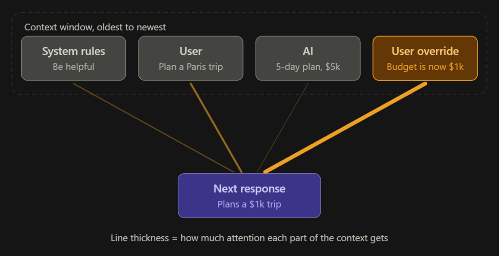
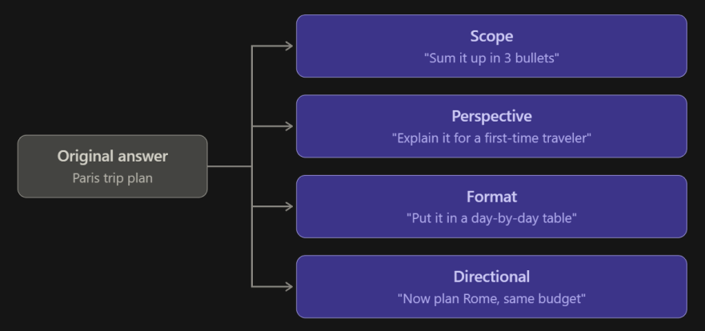

Decision Pivoting
1. Technical Mechanisms (How AI Pivots)
- What it is: The underlying processes that allow models to change direction mid-conversation without being retrained.
- Core Mechanisms:
- Context Window & In-Context Learning: Operates using a fixed token buffer to store history, allowing the model to analyze past dialogue and new overrides simultaneously.
- Attention Weight Re-allocation: Self-attention mechanisms shift numerical focus weights away from older concepts toward new directional keywords.
- Prompt Steering: Blends foundational system rules with dynamic user-injected overrides (e.g., tone, persona, or framework changes).
- Sources:
- Oracle Tech Articles (Dynamic Contextual Adaptation)
- PromptHub Guides (In-Context Learning & Prompt Steering)

2. Common Types of AI Idea Pivots
- Categories of Conversation Shifts:
- Scope: Adjusting depth or brevity (e.g., turning a long explanation into bullet points).
- Perspective: Changing tone, persona, or target audience (e.g., explaining code for a beginner vs. an expert).
- Format: Changing how information is displayed (e.g., turning text into a table or list).
- Directional: Shifting to a completely new subject while carrying over relevant context.
- Sources:
- IBM watsonx Documentation (Zero-Shot Task Pivoting)
- PromptHub Guides (In-Context Learning & Prompt Steering)

3. Best Practices for Directing AI Pivots
- Effective Prompt Engineering Techniques:
- Explicit Constraint Overrides: State clearly what past context to discard and what new parameters to adopt (e.g., "Ignore previous budget constraints...").
- Chain-of-Thought Steering: Prompt the model to step through the logical transition explicitly before generating the final answer.
- Role-Playing Overrides: Shift the model's persona to force a distinct conceptual perspective (e.g., acting as a consultant).
- Sources:
- LaunchDarkly Tech Blog (Prompt Engineering Best Practices: Dynamic Conversations)
- Oracle Tech Articles (What Is Prompt Engineering & Dynamic Contextual Adaptation)